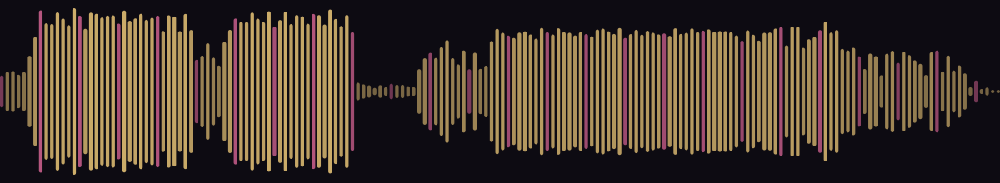
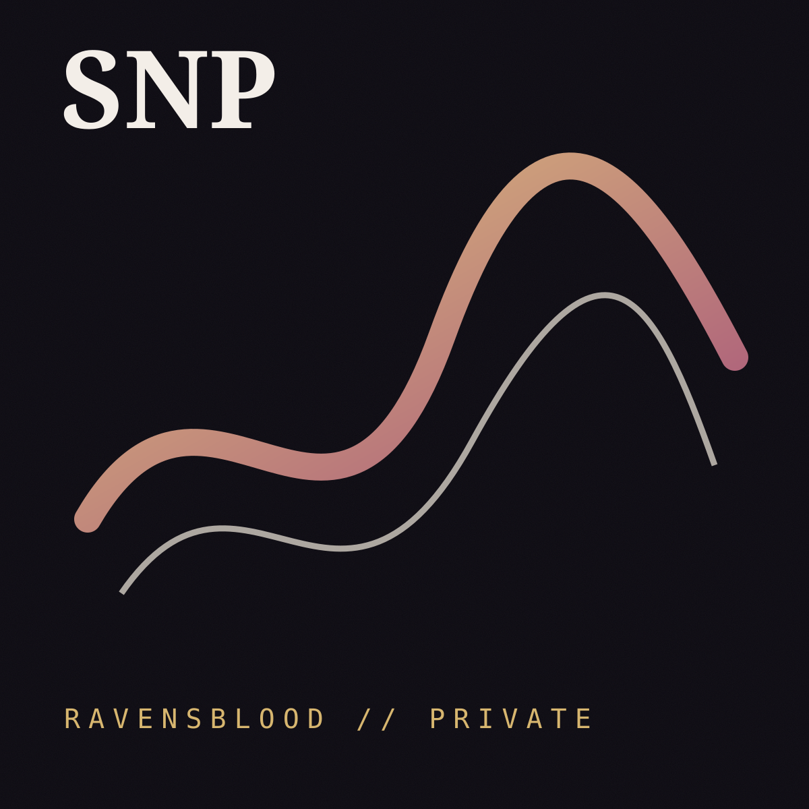
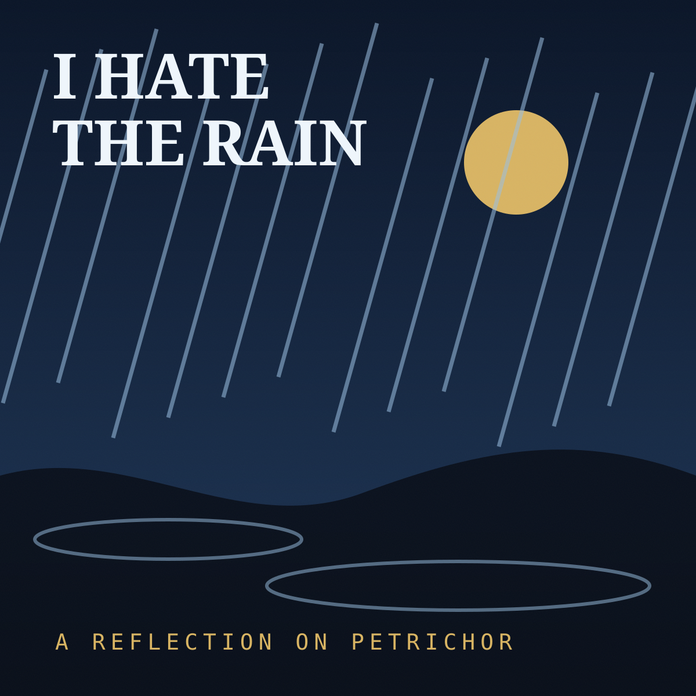
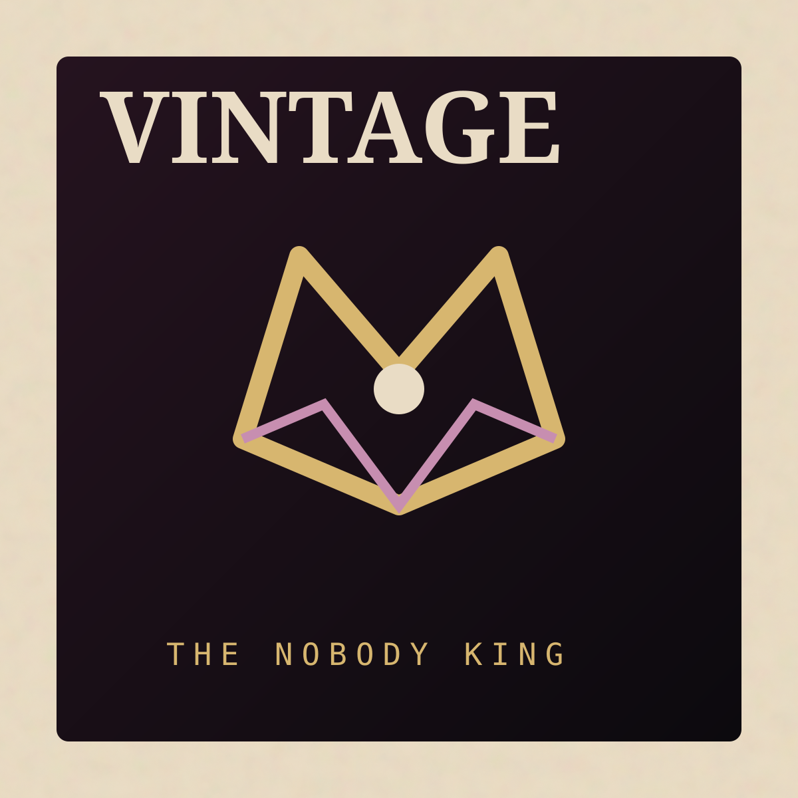
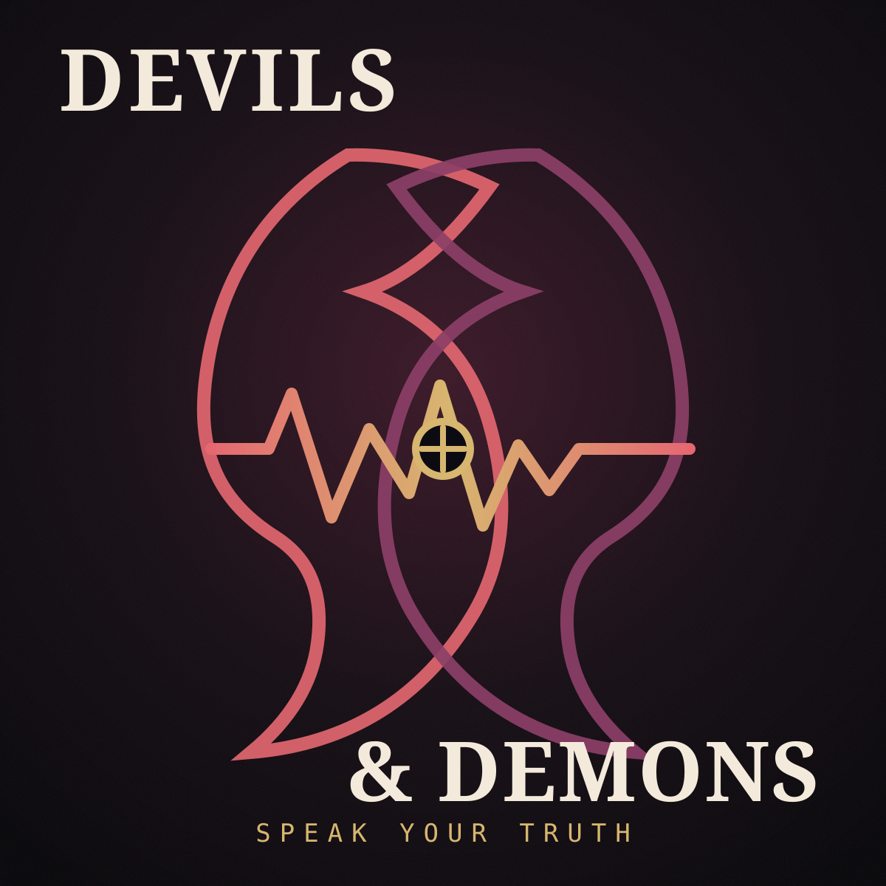
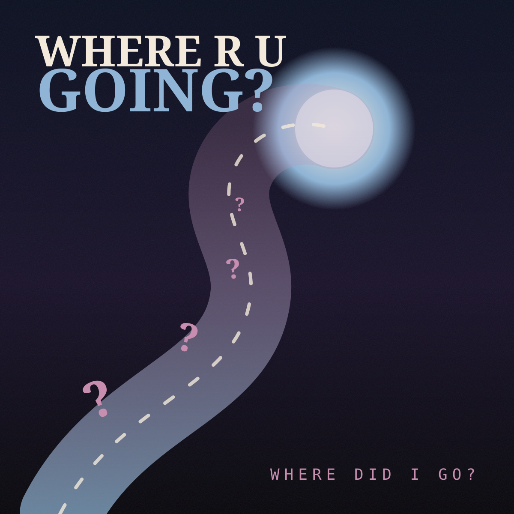
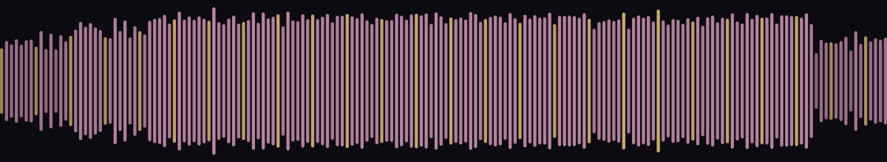
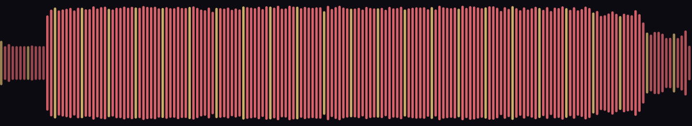
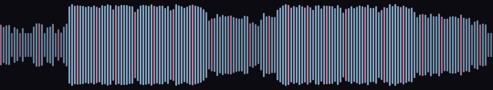

SNP
“These are the effortless flows supposedly.”
Produced & mixed by CJ Morse

Open in listening roomSignal Framework · Release-mode demonstration using music supplied by Ravensblood.
Return to Viryn StudioPrivate transmission · five unreleased records
Effortless flow. Petrichor. Nobody King mythology. Truth spoken through devils, demons, and departure. One focused stage for the work, the archive, and the people invited close enough to listen.





Real music, portfolio architecture. The audio and credits on this page were supplied for this demonstration. The surrounding release campaign, cover concepts, listening gate, and artist-site presentation are Viryn Studio proof-of-concept work.
Static-site boundary. The access code demonstrates a private-room experience but is not production authentication. A commercial room for unreleased masters would use secure accounts and protected media delivery.
Current transmission
Signal lets a release feel like an event before the listener ever reaches a streaming platform. Artwork, story, credits, audio, and next action remain in one intentional sequence.
“These are the effortless flows supposedly.”
Produced & mixed by CJ Morse

Open in listening roomI am the Nobody King ;P
Produced, performed, and written by CJ Morse

Open in listening roomGo on and speak your truth.
Produced, written, and performed by CJ Morse

Open in listening roomWhere did I go?
Produced, performed, and written by CJ Morse

Open in listening roomInvitation-only experience
For press, collaborators, bookers, licensing partners, private patrons, and the people an artist chooses to bring behind the curtain.
Private transmission available
This portfolio gate demonstrates the invitation flow. No account is created, and the code is intentionally supplied below so reviewers can experience the room.
It proves the visual and interaction design for an invited listening stage. Because this demonstration is hosted as a public static site, it does not protect the underlying media from someone who already knows the direct file URL. Production builds require authenticated access and protected storage.
The queue
Leave a listening note
Archive mode
Signal can pivot from an active release into a durable cultural archive—catalog, credits, photographs, flyers, oral history, lineup notes, and the context that social platforms eventually bury.
Electronic press kit
Signal separates audience experience from professional access without sending bookers, press, collaborators, or licensing partners through a maze of unrelated links.
Concept artist note
Independent work shaped by effortless flow, atmospheric reflection, and the self-mythology of the Nobody King. This demonstration keeps the artist’s supplied track language intact while showing how a focused release story can hold it.
This biography is concept copy for the framework and should be replaced by artist-approved language before commercial publication.
Short and long biographies, release notes, approved quotes, credits, and contact details.
Approved photographs, cover artwork, video embeds, usage notes, and downloadable files.
Separated inquiry paths for performances, press, collaborations, sync, and commercial use.
One framework · three arrangements
The current project owns the opening stage: listen, watch, pre-save, purchase, and share.
Dates, ticketing, performance media, booking, and technical information move forward.
Catalog, history, stories, and preservation become the center when the active cycle rests.
Viryn Studio · Signal Framework
Release campaigns, listening rooms, artist archives, EPKs, events, booking systems, and ongoing care—shaped around the actual work rather than a generic musician template.
Build with Signal